Home ／ 第5回
LESSON 05 ／ 作るフェーズ
テスト ― 壊れていないことを確かめる
～ 仕様書からテストコードを書かせ、落ちたら実装側を直す。UIテストと敵対的テストも Claude Code に任せる ～
- テストコードを書くのは Claude Code。あなたは「流す」と「読む」
- 直すのはテストではなく、アプリ本体
- 成果物：テストコード一式＋実行結果＋README の実行コマンド
- テストを流す節目は、自分で決める

01
テストとは
テスト＝アプリが決めたとおりに動くかを、決めた手順で確かめることです。ここまでやってきた「ボタンを押して画面を見る」も確かめる行為ですが、この回で扱うテストは次の2点が違います。
| いままでの動作確認 | この回のテスト | |
|---|---|---|
| 何を確かめるか | その場で気になったところ | 仕様書に書いてあることを、あらかじめ一覧にしておく |
| 何回できるか | 手で押すので、やるたびに手間が同じ | 同じ手順を何度でも流せる形にしておく |
表は横にスクロールできます
なぜ動作確認だけでは足りないのか
- Claude Code は「修正しました」と言いますが、それはコードを書き換えたという意味で、動いているという意味ではありません。動かして確かめるまで、直ったかどうかは分かりません
- 1か所直すと、直していない別の場所が壊れることがあります。同じファイルの別の処理、同じデータを使う別の画面が影響を受けます。手で確かめるのは「いま直したところ」だけなので、壊れた別の場所には気づけません
- 気づかないまま機能を足していくと、どの変更で壊れたのかが分からなくなります。戻すにも、どこまで戻せばよいか決められません
 用語
用語
- 仕様書
- 要件定義のときに作った
docs/spec.md。「やること・やらないこと・扱うデータ・画面」が書いてあります。この回ではテストの元になります。 - デグレ（リグレッション）
- 前まで動いていた機能が、別の変更のせいで動かなくなること。degrade（劣化する）、regression（後戻り）からきた言葉です。
- テストが通る／落ちる
- テストで確かめた結果が、決めたとおりだった（通る）／違っていた（落ちる）。落ちたテストには「何を確かめて、何が返ってきたか」が出ます。
この回の流れ（上から順に進めます）
3つのテスト
テストコード／UI／敵対的
書かせる
仕様書から
流す
落ちたら実装側を直す
UIテスト
ブラウザを操作させる
敵対的テスト
壊しにいく
いつ流すか
節目を自分で決める
残す
README・データ分離
02
この回で扱う3つのテスト
3つとも、実施するのは Claude Code です。ご自身が手で試したり、自分でテストのプログラムを書いたりはしません。
| テスト | 何をするか | 見つかること | 見つからないこと |
|---|---|---|---|
| テストコード | 確かめる手順をプログラムにして、命令1つで流す | データの保存・読み出し・計算が仕様どおりか。何度でも、大量に試せる | ボタンが押せない／表示が出ていない／レイアウトの崩れ |
| UI テスト | 画面を実際に操作して、表示と動きを確かめる | 見た目の崩れ、反応しないボタン、待ち時間の長さ | 数を試すこと（1回ずつ操作するので時間がかかる） |
| 敵対的テスト | 正しい使い方ではなく、壊すつもりで想定外の入力・操作を試す | 想定した使い方の外にある不具合（空・大量・連打・途中の中断） | 仕様どおりに動くか（それは上の2つで見る） |
表は横にスクロールできます
なぜ3つとも要るのか：テストコードが通ることと、画面で使えることは別です。データの登録は成功しているのに、押したボタンが画面では反応していない、ということが起きます。逆に UI テストだけでは数を試せません。そして上の2つは「仕様どおりに使ったとき」しか確かめません。人に渡した最初の数分で落ちるのは、たいてい仕様の外の操作です。
 用語
用語
- テストコード
- アプリが正しく動くかを自動で確かめる、確認用のプログラム。人が画面を押す代わりに、決めた手順を1つの命令で流せます。アプリ本体とは別のファイルに置きます。
- UI
- User Interface（利用者との接点）の頭文字。画面に見えている入力欄・ボタン・一覧のことです。
- UI テスト
- 画面を実際に操作して、表示と動きを確かめること。この回では Claude Code にブラウザを操作させて行います。
- 敵対的テスト
- 正しい使い方を確かめるのではなく、壊すことを目的に、想定外の入力・操作をわざと試すこと。
テストコードの中身は、こういう一覧です
たとえば食費メモなら、テストコードには次のような確認が並びます。1行が1つのテストです。
- 金額・日付・メモを入れて保存すると、一覧に1件増える
- 金額が空のまま保存すると、保存されずに理由が表示される
- 金額に文字を入れて保存すると、保存されない
- 一覧は新しい順に並ぶ
- 今月の合計は、今月の記録だけを足した値になる
- 削除すると、一覧から消え、保存先からも消える
流すと、1行ごとに「通った」「落ちた」が出ます。落ちたものには、何を確かめて（期待）、実際に何が返ってきたか（結果）が添えられます。
 テストコードを書けるようになる必要はありません。書くのは Claude Code です。ご自身に要るのは ① 流せること ② 落ちたときに、どのテストが落ちたのかを読めること、の2つだけ。
なぜそれで足りるのか：あとで効くのは、テストを書く力ではなく、直したあとに前と同じ確認をもう一度流す習慣だからです。読めれば、次の指示（「このテストが落ちたので実装を直して」）が書けます。
テストコードを書けるようになる必要はありません。書くのは Claude Code です。ご自身に要るのは ① 流せること ② 落ちたときに、どのテストが落ちたのかを読めること、の2つだけ。
なぜそれで足りるのか：あとで効くのは、テストを書く力ではなく、直したあとに前と同じ確認をもう一度流す習慣だからです。読めれば、次の指示（「このテストが落ちたので実装を直して」）が書けます。
流し方：テストを流す命令は、使っている技術で決まります。Claude Code に書かせたあと、「テストを流すコマンドを1行で教えて」と聞けば返ってきます。Node.js を使っている場合は npm test になることが多いです（目安。構成によって変わります）。ターミナルに打つか、Claude Code に「テストを流して」と頼めば流れます。
 用語
用語
- 期待／結果
- 期待＝テストが「こうなるはず」と決めている値。結果＝実際にアプリが返した値。落ちたテストは、この2つが違っていたということです。
- npm test
- Node.js のプロジェクトで、テストを流すときによく使う命令。何が流れるかはプロジェクトの設定で決まります。
- ターミナル
- 文字で PC に命令する画面。Mac は「ターミナル」、Windows は「ターミナル」や「PowerShell」という名前で入っています。
03
仕様書をもとに、テストコードを作らせる
テストコードはコードを見て作らせるのではなく、仕様書（docs/spec.md）を見て作らせます。
なぜ仕様書からなのか
- いまのコードを元にテストを作ると、いまのコードの動きがそのまま「正解」になります。コードに間違いがあれば、その間違いを「正しい」として固定してしまいます。テストは全部通るのに、アプリは間違ったまま、という状態になります
- 仕様書には「こうあるべき」が書いてあります。仕様書からテストを作れば、コードが仕様どおりかをコードとは別の物差しで確かめられます
- 仕様書の「やらないこと」は、テストの対象外の根拠になります。コードを元にすると、AI が勝手に足した機能までテストされます
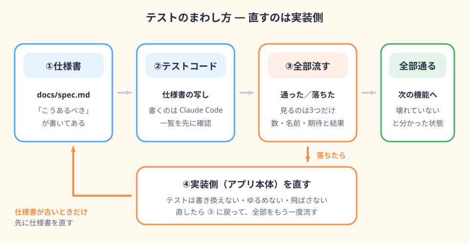
テストコードを書かせる指示の型
自分のアプリのフォルダを開いた Claude Code に、そのまま貼って送ります。
docs/spec.md を読んで、このアプリのテストコードを書いてください。 ■ 守ること - テストの元にするのは docs/spec.md です。いまのコードの動きを正解にしないでください - 「やること（MVP）」と「扱うデータ」に書いてあることを1つずつテストにしてください - 「やらないこと」に書いてある機能のテストは作らないでください - テストの名前は、何を確かめているのか日本語で分かるようにしてください - テスト用のデータは、実際に使っているデータと混ざらない場所に置いてください - アプリ本体のコードは書き換えないでください。今回作るのはテストのファイルだけです ■ 先に見せてほしいこと テストのファイルを書く前に、「どのテストを作るか」の一覧を、仕様書のどの行に対応するかを添えて出してください。 一覧を私が確認してから、ファイルを書いてください。
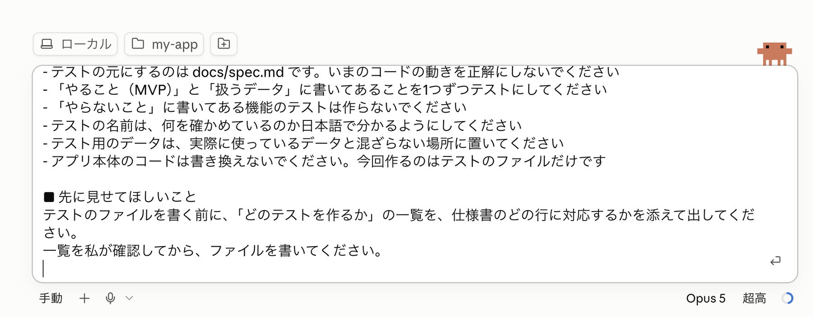
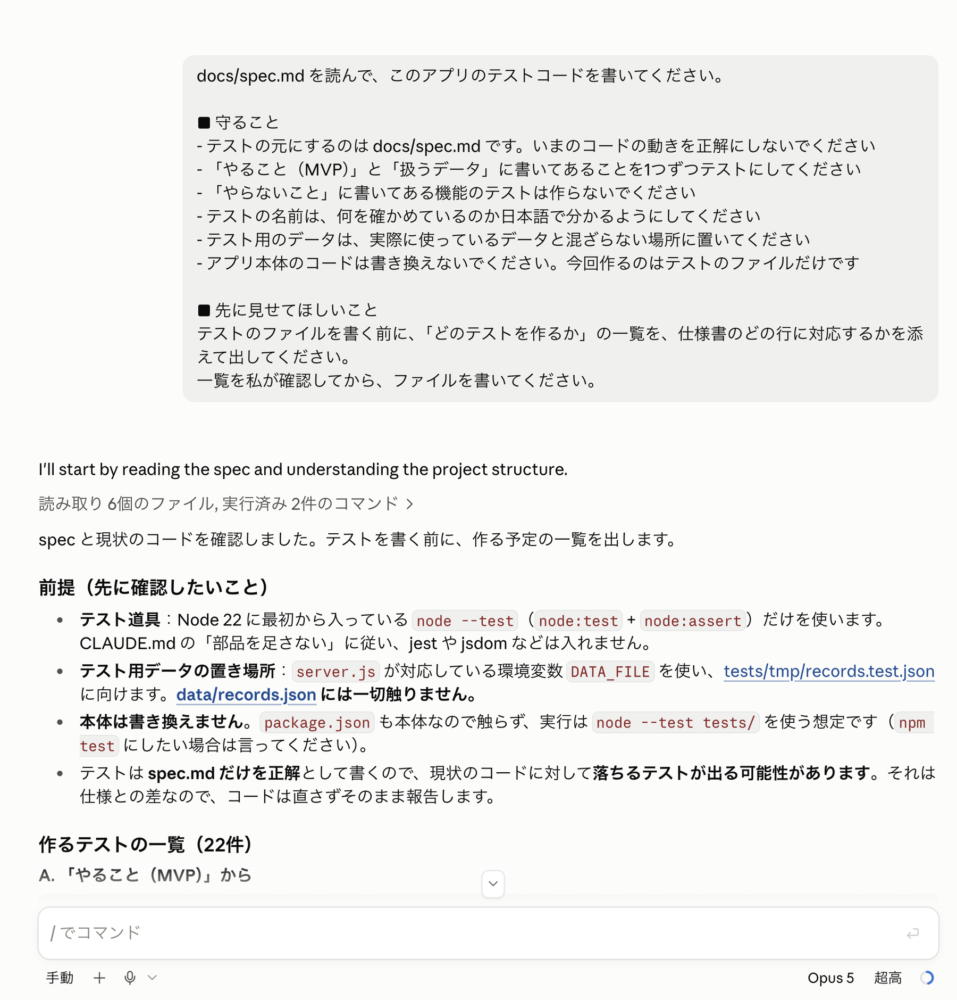
なぜ一覧を先に出させるのか：いきなりファイルを書かせると、何十行ものプログラムを渡されて、読めずに通してしまいます。一覧なら日本語なので、仕様書と見比べて「抜けている」「やらないことが混ざっている」とご自身で判断できます。
なぜ「アプリ本体を書き換えない」と書くのか：テストを書くついでに、通りやすいようにアプリ側も直されることがあります。この段階で本体が変わると、そのあとテストが落ちたときに「もともと壊れていた」のか「いま書き換えられて壊れた」のかが分からなくなります。
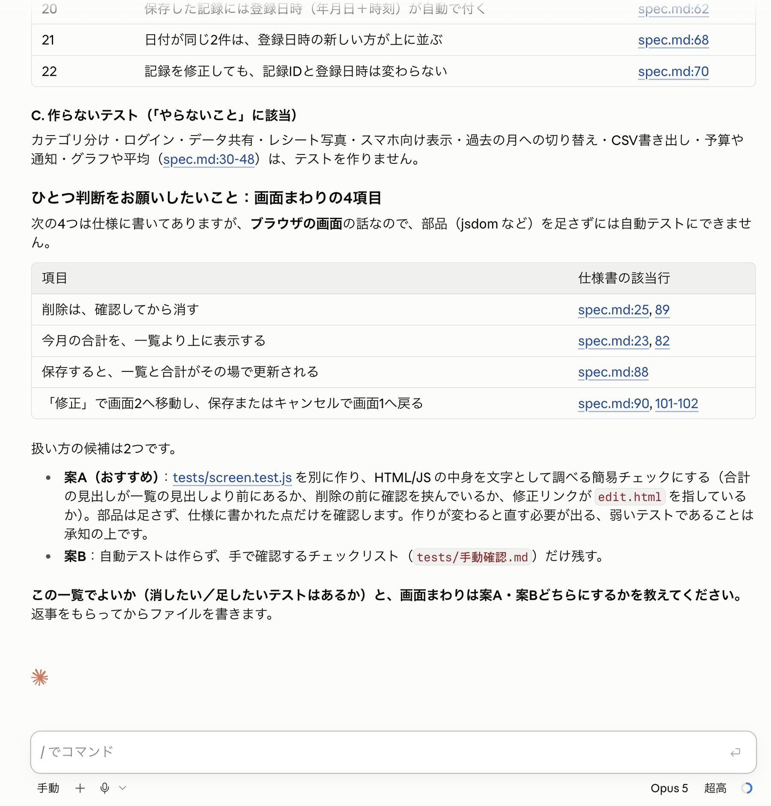
返ってきた一覧の見方
- 1
仕様書の「やること（MVP）」の各行に、対応するテストがあるか
無い行があれば「〜のテストも足してください」と頼みます。
- 2
「やらないこと」の機能が混ざっていないか
混ざっていれば「〜はやらないことなので、そのテストは消してください」と頼みます。
- 3
「扱うデータ」の必須の項目に、空のまま保存できないことを確かめるテストがあるか
必須の項目が空でも保存できてしまう不具合は、いちばんよく起きます。
- 4
納得したら「この一覧でファイルを書いてください」と送る
書き込みの確認画面では、ファイルの場所がテスト用のファイル（
testやtestsと付いたフォルダやファイル名）であることを見てから「一度だけ許可」を押します。なぜ：場所がapp/の中なら、アプリ本体を書き換えようとしています。「拒否」して、指示の「アプリ本体は書き換えない」をもう一度伝えます。
04
テストを流して、落ちたら実装側を直させる
テストのファイルができたら、流します。初めて流したときに、いくつか落ちるのがふつうです。落ちたテストが、いまのコードと仕様書のずれを示しています。
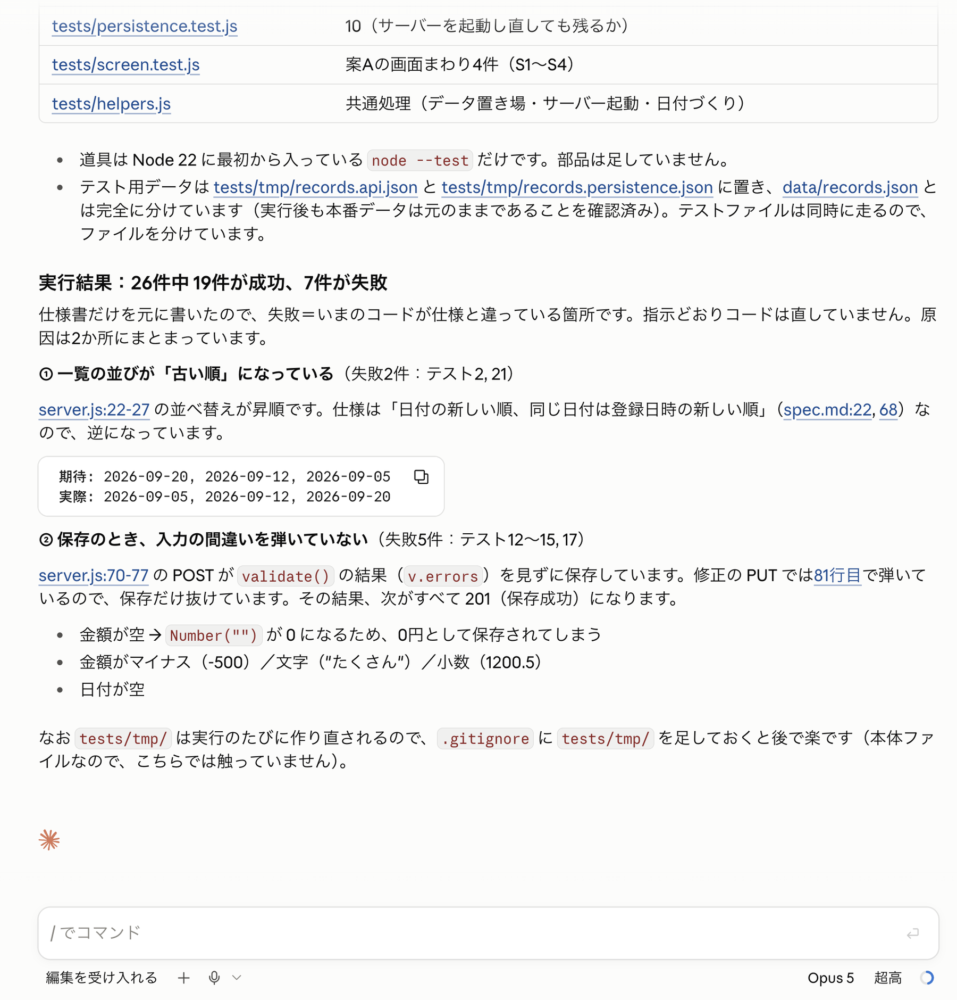
 落ちたときの原則：直すのは実装側（アプリ本体）で、テストではありません。
落ちたときの原則：直すのは実装側（アプリ本体）で、テストではありません。
なぜ実装側を直すのか
- テストは仕様書の写しです。テストが落ちたのは「アプリが仕様どおりに動いていない」という意味です。ここでテストのほうを書き換えて通すと、仕様に合っていない動きを「正しい」と宣言したことになり、仕様書とアプリのずれが隠れます
- Claude Code は「テストを通す」ことを目標にすると、テストの条件をゆるめる・落ちるテストを飛ばす（skip）という近道を選ぶことがあります。テストは全部通るのに、アプリは直っていません。指示で先に禁じておきます
- 例外は1つ。仕様書のほうが間違っている（書いたあとに考えが変わった、書き方が曖昧だった）場合です。このときは先に仕様書を直し、そのあとテストを直します。順番を守れば、仕様書・テスト・アプリの3つがそろったまま進みます
 用語
用語
- skip（テストを飛ばす）
- 落ちるテストを実行しない印を付けて、結果に出ないようにすること。通ったのと同じに見えるので、結果に skip の文字があったら疑います。
落ちたテストを渡して、実装側を直させる指示の型
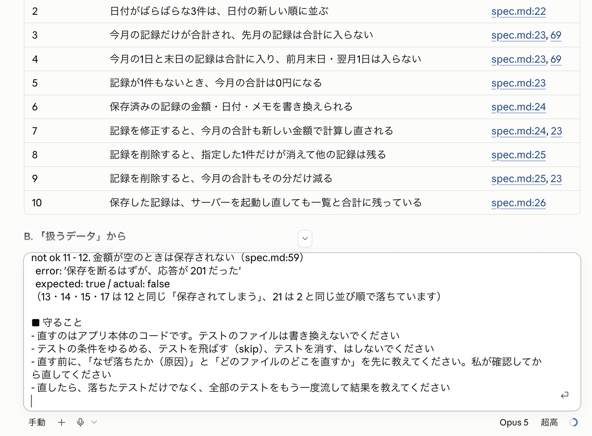
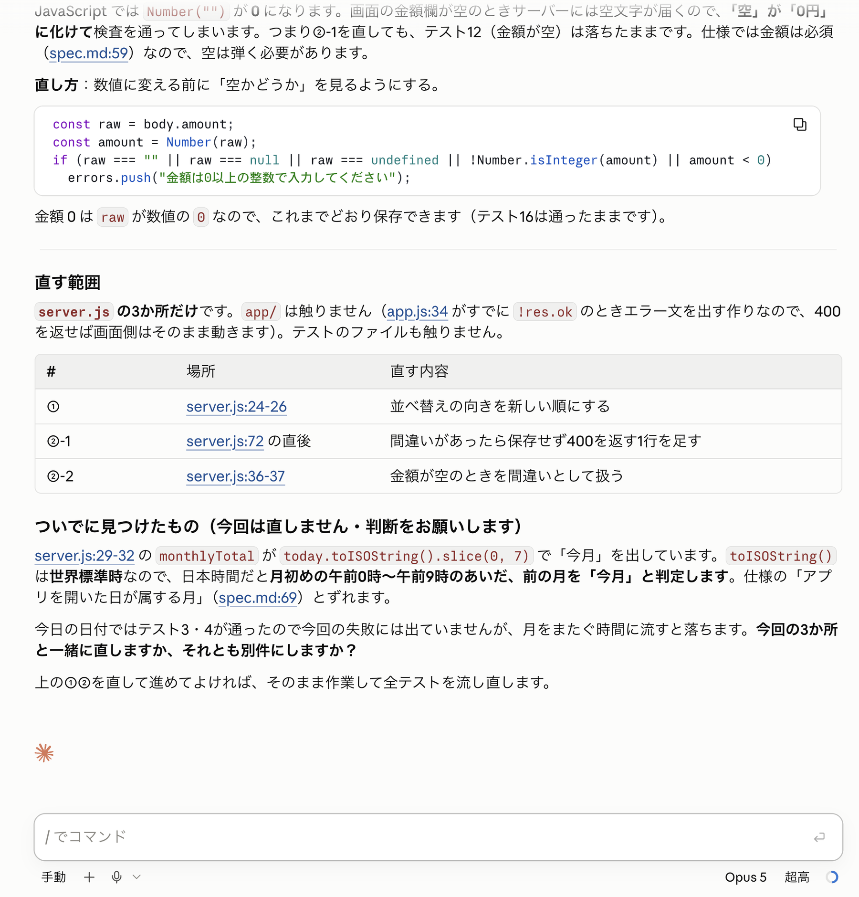
なぜ「原因と直す箇所を先に」なのか：いきなり直されると、何が悪かったのかが分からないまま消えます。同じ不具合が別の場所で出たとき、また一から調べることになります。原因が1行で分かっていれば、次に同じ症状が出たときにご自身で当たりが付けられます。
なぜ「全部もう一度流す」のか：落ちた1つを直した拍子に、通っていた別のテストが落ちることがあります（デグレ）。落ちたものだけ流し直すと、そこに気づけません。
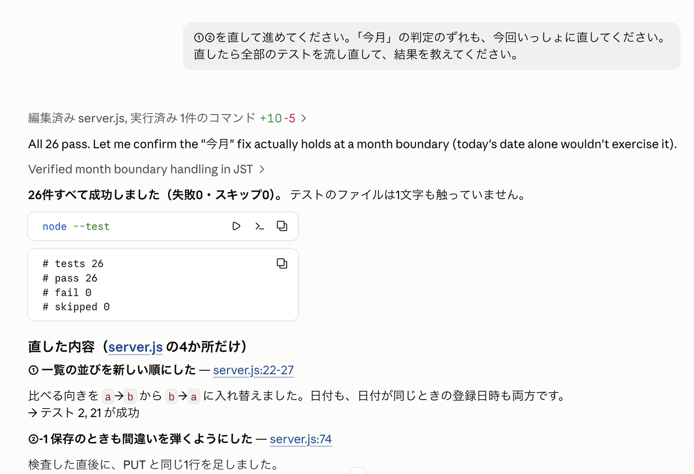
仕様書のほうが間違っていたとき
05
UI テストを Claude Code に実施させる
テストコードが通ったら、画面を実際に操作して確かめます。Claude Code にブラウザを操作させます（Claude デスクトップアプリに内蔵されているブラウザを使うので、追加で入れるものはありません）。Claude Code はブラウザを開き、入力欄に文字を打ち、ボタンを押し、画面に何が出たかを読んで報告します。
なぜテストコードのあとに UI テストなのか：テストコードで「データの処理は仕様どおり」と分かったあとなら、UI テストで見つかる不具合は画面側に絞られます。先に UI テストをすると、落ちたときに画面の問題かデータの問題かが分かりません。
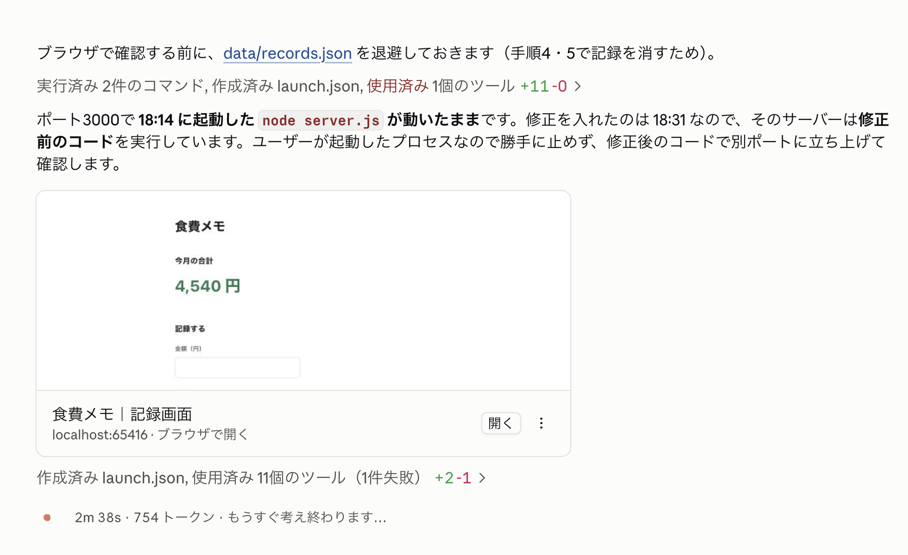
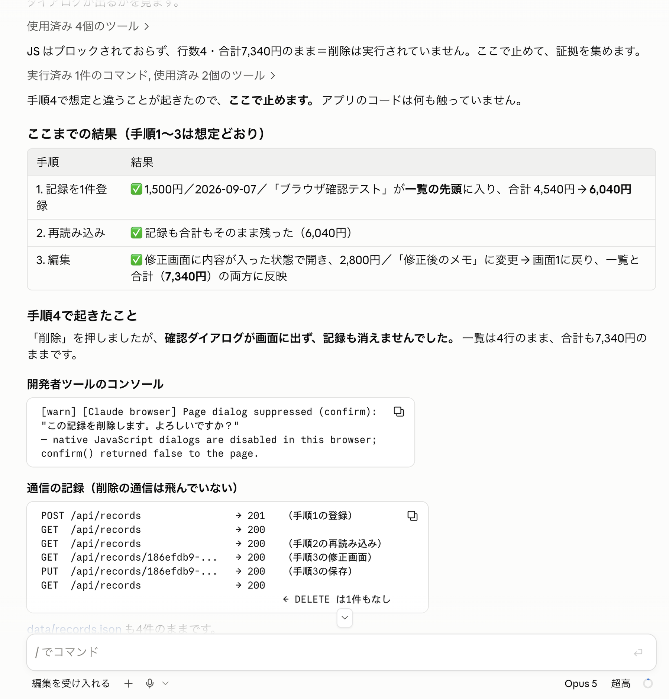
なぜ「勝手に直さないでください」と書くのか：確認を頼んだつもりが、そのまま修正まで進んでしまうと、何が起きていたのかを人が見られなくなります。確認と修正は分けます。
なぜスクリーンショットを撮らせるのか：「確認しました」という報告だけでは、実際の画面は分かりません。撮らせておけば、報告と画面が食い違っていたときに気づけます。
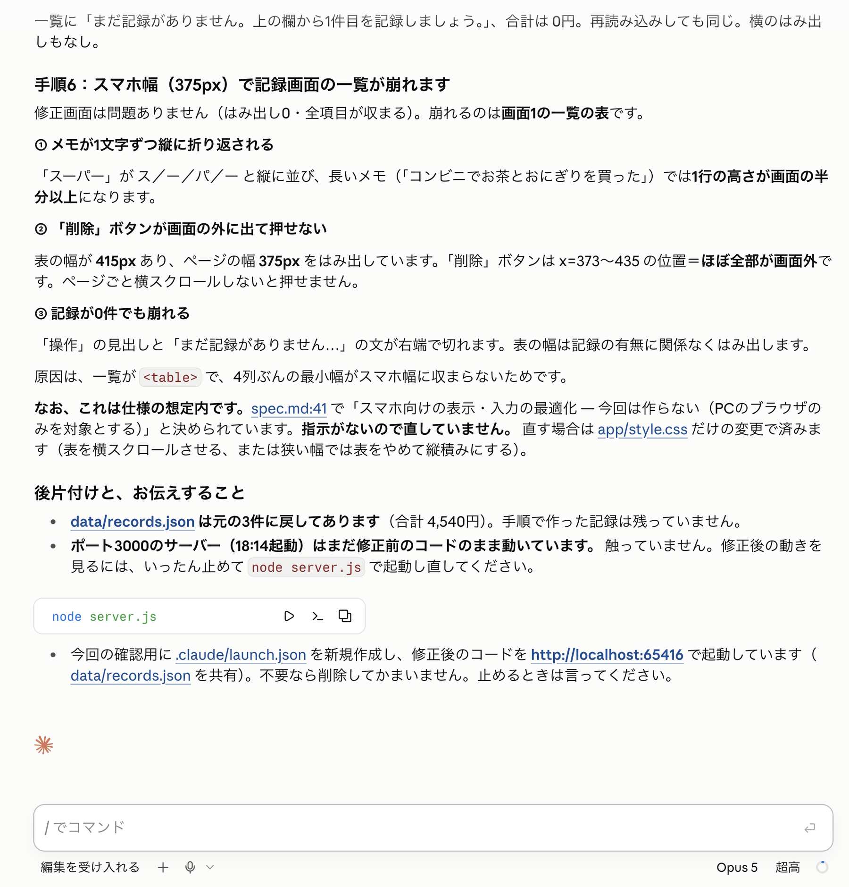
 用語
用語
- http://localhost:3000
- 自分の PC の中で動いているアプリを、ブラウザで開くときの住所。番号（3000）は構成によって変わります。ターミナルに出ている住所を使ってください。
- 開発者ツール
- ブラウザに最初から付いている、画面のエラーや通信の記録を見る機能。コンソールは、その中の、画面側のエラーが文字で出る欄です。
 操作を任せるときの握り（3つ）
操作を任せるときの握り（3つ）① 操作させるのは自分の PC で動かしている開発中のアプリだけ。仕事で使っているサービスの画面は触らせない
② テスト用のデータで動かす。実際の記録が入っている状態で削除の確認をさせない
③ 削除の操作を任せる前に、消えても困らない状態か確かめる
なぜここまで握るのか：画面の操作は、確認のつもりでも実際にデータを消す操作になります。人が押すときは手が止まりますが、任せた場合は止まりません。
06
敵対的テストを Claude Code に実施させる
仕様どおりの操作が通ったら、次は壊しにいきます。
なぜ要るのか：自分で作ったアプリは、自分が想定した使い方でしか触りません。想定どおりに操作している限り不具合は出ないので、直すべき箇所が見つからないまま「完成」になります。人に渡した最初の数分で落ちるのは、たいていここで試していない操作です。
なぜ自分の手ではなく Claude Code にやらせるのか
- 作った本人は「こう使うはず」から抜けられません。壊す観点を先に列挙させると、自分では思いつかない入力が出てきます
- 連打・極端に長い入力・大量のデータは、手で試すには数が多すぎて続きません
- ここまでの「テストを流す」「ブラウザを操作させる」の延長なので、任せる相手も道具も増えません
壊しにいく観点（8つ）
| 観点 | 試すこと | 起きがちなこと |
|---|---|---|
| 空 | 何も入れずに登録・保存する | 空のデータが増える／サーバー側で落ちる |
| 極端に長い | 数千文字を貼り付ける | 表示が崩れる。AI 機能があれば1回の費用が跳ね上がる |
| 想定外の文字 | 絵文字・改行・引用符・< や > を含む文字 | 文字が化ける／表示が壊れる |
| 0件 | 1件も無い状態で一覧・検索・削除を操作する | 真っ白な画面／エラー |
| 大量 | 数百件を入れた状態で開く | 表示が返ってこない |
| 連打 | 送信ボタンを続けて押す | 二重に登録される。AI 機能があれば二重に費用がかかる |
| 途中で中断 | 保存の途中で再読み込みする・戻る | 途中のデータが残る／消える |
| わざと失敗させる | 保存先を一時的に読めなくする／外部サービスの接続を一時的に誤った値にする | 何も表示されないまま止まる |
表は横にスクロールできます
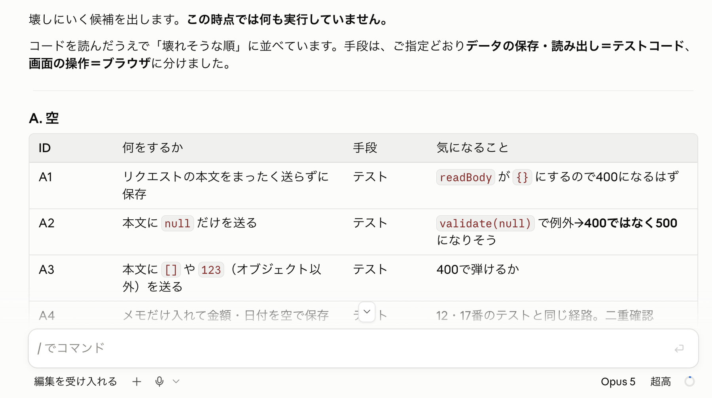
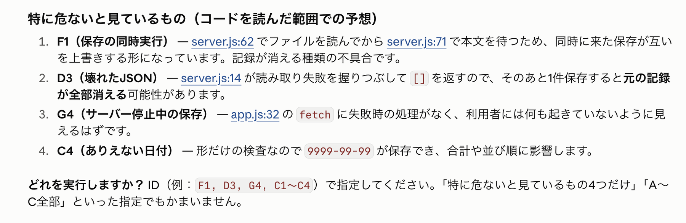
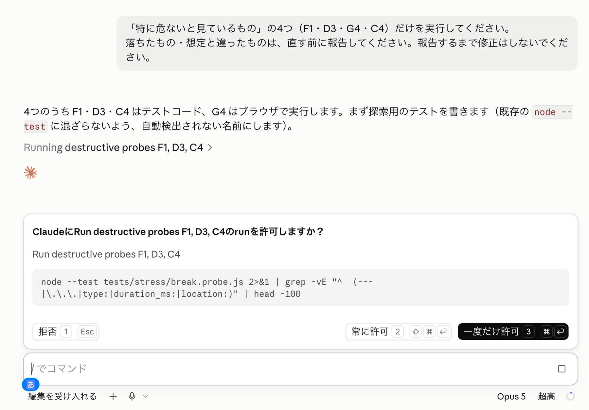
なぜ一覧を先に出させて、人が選ぶのか：全部いっぺんに実行させると、直しきれない量の不具合が一度に出てきて手が止まります。承認なしに大量投入や削除まで走ると、保存先のデータが元に戻せなくなります。
なぜテストコードとブラウザ操作を分けるのか：数百件の投入や連打は、ブラウザで1回ずつ操作すると終わりません。テストコードなら数秒で流せます。逆に「表示が崩れる」「押しても反応しない」はブラウザで見ないと分かりません。観点ごとに向いている手段が違います。
なぜここでも「報告するまで修正しない」と書くのか：先に直されると、何が起きていたのかが分からないまま消えます。報告があれば、直したあとにそのテストをテストコードに足して、同じ不具合が再発しないようにできます。
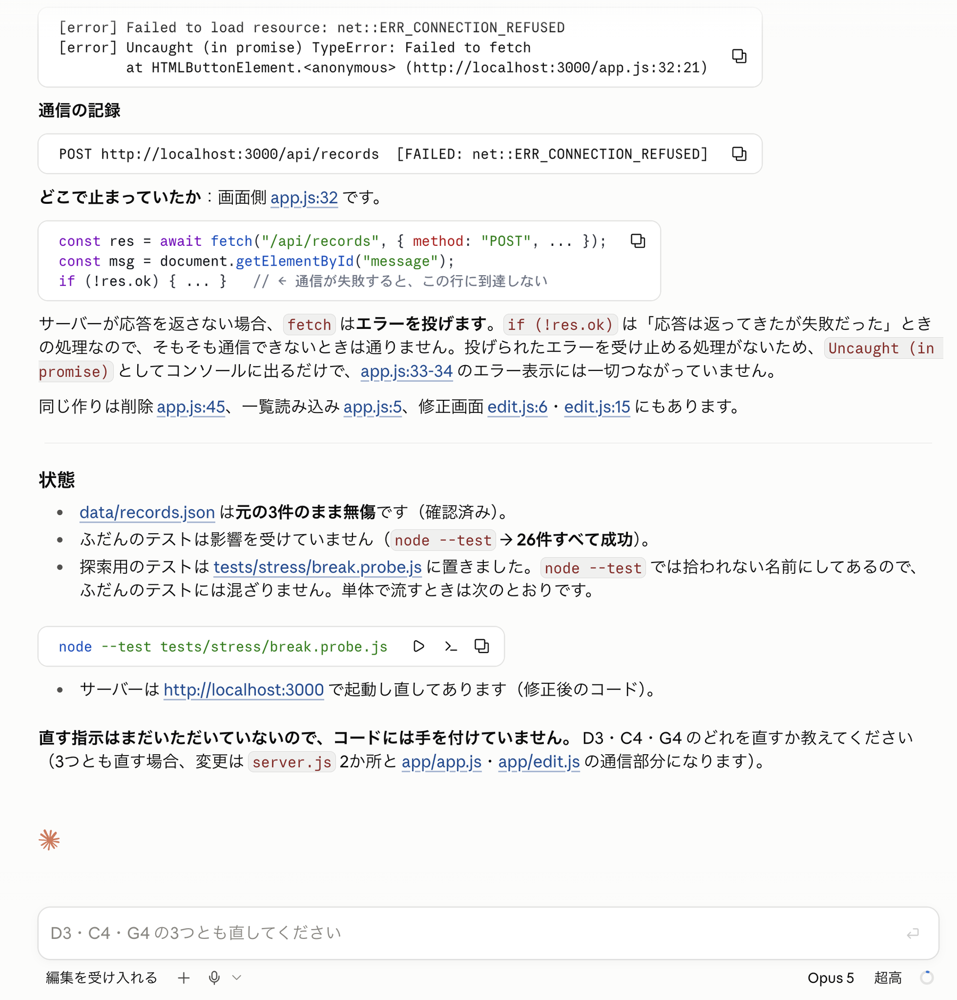
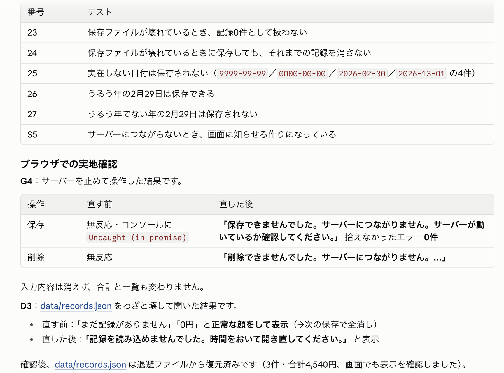
敵対的テストで見つかった不具合は、直したあと、テストコードに足します。「金額に数千文字を入れても保存されない」「連打しても1件しか登録されない」のように、見つかった分だけテストが増えます。次に流すとき、同じ壊し方は自動で確かめられます。壊し方を1回見つけたら、以後は人がやらなくて済むのが、テストコードにする理由です。
07
テストを流す頻度は、自分で決める
テストは要ります。しかし、機能を1つ足すたび・1行直すたびに全部のテストを流していたら、きりがありません。テストが増えるほど1回に時間がかかり、結果を読む手間も増えます。毎回全部流す決まりにすると、そのうち流さなくなります。流さないより、決めた節目で必ず流すほうが続きます。
なぜ「自分で決める」なのか：流す節目は、アプリの作りと、その日の作業内容で変わります。保存の仕組みを触った日と、ボタンの色を変えた日では、壊れる可能性がまるで違います。決まりを一律に配るより、「いま流すべきか」をご自身で判断できるほうが、あとで1人になったときに使えます。
判断の目安
- 機能を1つ足し終えた（
docs/tasks.mdのタスクが1つ終わった） - 流すか全部流す
- なぜここが節目です。次のタスクに進む前に、前の機能が壊れていないと分かっていれば、次に落ちたときの原因は次のタスクに絞れます
- データの保存・読み出しの処理を触った
- 流すか全部流す
- なぜデータは全画面が共有しています。1か所の変更が別の画面に出ます
- 文言・色・余白だけを直した
- 流すか流さなくてよい（UI テストの該当画面だけ見る）
- なぜデータの処理は変わっていません。壊れるとすれば見た目だけです
- 数日空けて作業を再開する
- 流すか最初に全部流す
- なぜ前回どこまで動いていたかを、記憶ではなく結果で確かめます。落ちていれば、前回の最後の変更が原因です
- 人に見せる・使ってもらう前
- 流すか全部流す＋UI テスト
- なぜ人が触るときは、自分が想定しない順で押されます
- テストが落ちたのを直した直後
- 流すか全部流す
- なぜ直した拍子に別のテストが落ちるのがデグレです。落ちた1つだけ流し直すと気づけません
全部か、一部か：全部流すのに時間がかかるようになったら、「今回の変更に関係するテストだけ流して」と Claude Code に頼めます。ただし、節目（タスクの完了・人に見せる前）では全部流します。関係ないと思っていた場所が壊れているのを見つけるのが、全部流す目的だからです。
決めた節目を CLAUDE.md に書いておく
CLAUDE.md は Claude Code が毎回読むファイルです。そこに書いておけば、Claude Code のほうから節目でテストを流すようになります。
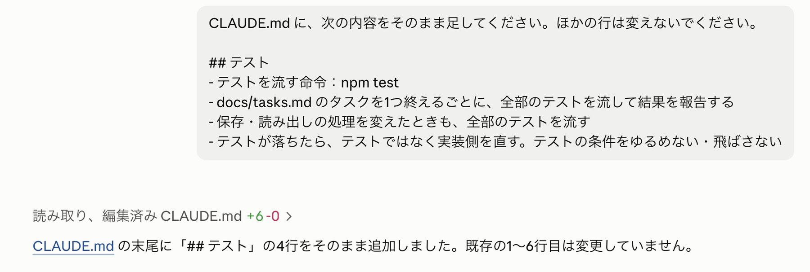
Claude Code に「CLAUDE.md に、この内容を足してください」と頼めば書き込んでくれます。なぜ CLAUDE.md に書くのか：自分が忘れても、Claude Code が読みます。「流すのを忘れた」を、人の記憶ではなく仕組みで防ぎます。
 用語
用語
- CLAUDE.md
- アプリのフォルダに置く、Claude Code への決まりごとを書いたファイル。Claude Code は作業のたびにこれを読みます。
- 節目
- ここで一度立ち止まって確かめる、と決めた区切り。この回では「タスクが1つ終わったとき」を基本の節目にします。
08
あとから何度でも流せる形で残す
その場で流せても、数週間後に流し方が分からなければ使われません。次の3つを Claude Code にさせておきます。
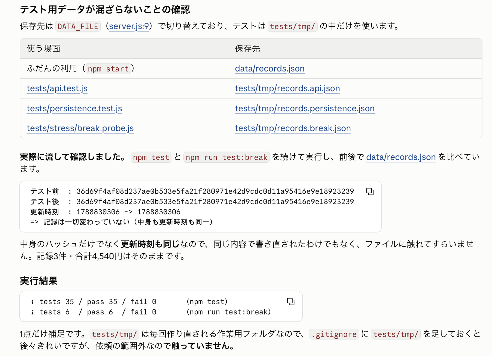
- なぜ実行方法を README に書かせるのか：数週間後には、どう流すのかご自身で分からなくなります。思い出せない手順は使われません。
- なぜテスト用のデータを分けさせるのか：同じ保存先を使うと、テストを流すたびにご自身の記録が消えます。1回消えた時点で、テストを流さなくなります。
- なぜ名前を日本語にさせるのか：落ちたテストの名前が
test_case_12では、何が壊れたのか分からず、Claude Code への指示も書けません。「金額が空のとき保存されない」なら、そのまま指示に貼れます。
 用語
用語
- README
- アプリのフォルダの直下に置く、使い方の説明ファイル。名前は「読んで」の意味で、
README.mdというファイル名にすることが多いです。
Deliverables
この回で作るもの
終わったとき、手元に次のものがある状態にします。この回の課題の内容は commmune のゼミスレッドでご案内し、提出は「ゼミ参加者向け 事前課題提出受付フォーム」から開催3日前までにお願いします（Home の「ゼミのルール・修了要件」）。演習サイト Boarding Pass の理解度チェックもあります。
 用語
用語
- commmune
- DMM 生成AI CAMP の受講生向けコミュニティサイト。ゼミごとのスレッドで課題や連絡を案内します。
テストコード一式と、全部通った結果
仕様書の各行に対応したテストのファイルと、流して全部通った状態のスクリーンショット。敵対的テストで見つかった不具合のテストも足した状態で。
UI テストと敵対的テストの記録
Claude Code に撮らせた UI テストのスクリーンショット。敵対的テストの観点の一覧と、実行したもの・見つかったもの・直したもの。
README と CLAUDE.md
README に書いたテストの実行コマンド（1行）と、CLAUDE.md に書いた「テストを流す節目」。
Pitfalls
よくあるつまずきと対処
詰まったら、Home の「分からないことが出てきたらこの順番で」の順（スクショを撮って AI に聞く → ゼミ掲示板）で進めてください。
いまのコードを元にテストを作られた
コードの間違いが「正解」として固定され、テストは通るのにアプリは間違ったままになります。
対処：指示に「元にするのは docs/spec.md」「いまのコードの動きを正解にしない」を入れます。一覧を先に出させて、仕様書と見比べます。
テストが落ちたら、テストのほうを直された
仕様に合っていない動きが「正しい」ことになり、ずれが隠れます。
対処：「直すのはアプリ本体」「テストの条件をゆるめない・飛ばさない・消さない」を指示に入れます。結果に skip が出ていたら疑います。
落ちたテストだけ流し直して先に進んだ
直した拍子に壊れた別の場所（デグレ）に気づけません。
対処：直したあとは全部流します。指示の型に「全部もう一度流して」を入れてあります。
テストの結果が読めない
「自分には無理だ」で止まります。
対処：見るのは3つだけです。通った数と落ちた数／落ちたテストの名前／期待と結果。書くのは Claude Code です。それでも分からなければ、結果をそのまま貼って「どのテストが、なぜ落ちたか、1行ずつ日本語で説明して」と頼みます。
毎回全部流そうとして、流さなくなった
壊れているのに気づかないまま機能が増えます。
対処：節目（タスク完了・保存処理の変更・再開時・人に見せる前）を決めて CLAUDE.md に書きます。見た目だけの変更では流しません。
観点の一覧を出させたら、いきなり全部実行された
直しきれない量の不具合が一度に出て手が止まります。データが戻せなくなることもあります。
対処：指示に「この時点では実行しないでください」「私が選んだものだけ」を入れます。
テストを流したら自分の記録が消えた
以後テストを流さなくなります。
対処：テスト用のデータを別の場所に置かせ、「私の記録が消えないことを確かめて」まで指示します。握り3つも守ります。
テストコードだけで確認を終えた
押せないボタン・崩れた表示が残ります。
対処：UI テスト（ブラウザ操作）も必ず実施させます。片方では見つからない不具合があります。
敵対的テストで見つけた不具合を直して終わった
同じ壊し方で、あとでまた壊れます。
対処：直したあと、その壊し方をテストコードに足させます。
確認を頼んだら Claude Code が勝手に直した
何が起きていたかが消えます。
対処：「報告するまで修正しない」「勝手に直さない」を指示に入れます。直されてしまったら「いま直した内容を元に戻して、何が起きていたかを先に報告して」と頼みます。
UI テストで「削除の確認が出ない」と報告された
Claude Code が操作するブラウザは、確認の小窓（ダイアログ）を表示できず、自動で「いいえ」を返します。アプリの不具合ではありません。
対処：コンソールに確認の文言が出ていれば、確認は動いています。「確認を一時的に『はい』にして続けて。アプリのファイルは触らないで」と指示するか、その手順だけ自分のブラウザで確かめます。
テストを流す命令が分からない
流せないので、確認が続きません。
対処：Claude Code に「テストを流すコマンドを1行で教えて」と聞き、README に書かせます。「テストを流して」と頼めば Claude Code が流してくれます。
テストを書くときにアプリ本体まで書き換えられた
「もともと壊れていた」のか「いま壊された」のか分からなくなります。
対処：書き込みの確認画面で、場所が app/ の中なら「拒否」。指示の「アプリ本体は書き換えない」をもう一度伝えます。
Glossary
この回で出てきた用語
| 用語 | 意味 |
|---|---|
| テスト | アプリが決めたとおりに動くかを、決めた手順で確かめること。何を確かめるかを先に一覧にし、何度でも流せる形にしておく点が、その場の動作確認と違う |
| テストコード | アプリが正しく動くかを自動で確かめる、確認用のプログラム。決めた手順を1つの命令で流せる。書くのは Claude Code |
| テストが通る／落ちる | 確かめた結果が決めたとおりだった（通る）／違っていた（落ちる） |
| 期待／結果 | 期待＝テストが「こうなるはず」と決めている値。結果＝実際にアプリが返した値 |
| デグレ（リグレッション） | 前まで動いていた機能が、別の変更のせいで動かなくなること |
| 仕様書（docs/spec.md） | 要件定義で作った、やること・やらないこと・扱うデータ・画面を書いたファイル。テストの元 |
| UI | User Interface の頭文字。画面に見えている入力欄・ボタン・一覧 |
| UI テスト | 画面を実際に操作して、表示と動きを確かめること。この回では Claude Code にブラウザを操作させて行う |
| 敵対的テスト | 正しい使い方を確かめるのではなく、壊すことを目的に想定外の入力・操作をわざと試すこと |
| skip（テストを飛ばす） | 落ちるテストを実行しない印を付けて、結果に出ないようにすること。通ったのと同じに見えるので、疑って見る |
| npm test | Node.js のプロジェクトでテストを流すときによく使う命令。何が流れるかは設定で決まる |
| ターミナル | 文字で PC に命令する画面 |
| http://localhost:3000 | 自分の PC の中で動いているアプリをブラウザで開くときの住所。番号は構成によって変わる |
| 開発者ツール／コンソール | ブラウザに最初から付いている、画面のエラーや通信の記録を見る機能。コンソールは画面側のエラーが文字で出る欄 |
| 節目 | ここで一度テストを流す、と決めた区切り。基本は「タスクが1つ終わったとき」 |
| CLAUDE.md | アプリのフォルダに置く、Claude Code への決まりごとを書いたファイル。テストを流す節目をここに書く |
| README | アプリのフォルダの直下に置く、使い方の説明ファイル。テストの実行コマンドをここに書く |
| commmune | DMM 生成AI CAMP の受講生向けコミュニティサイト |
表は横にスクロールできます